This course works through the methods of managing source data with FME Flow. However, if you want to learn more about data integration in general, we recommend you browse these learning resources:
In general, it's easy to author a workspace for FME Flow because you can publish and run workspaces from FME Form on FME Flow with minimal alteration of the source data.
However, there are additional methods you can use to improve source data management on FME Flow. These methods include:
This course works through the methods of managing source data with FME Flow. However, if you want to learn more about data integration in general, we recommend you browse these learning resources:
When you publish workspaces to FME Flow, the Reader parameters do not change, and you can only change them if you create Published Parameters. Self-serve workflows benefit from Published Parameters that take source data as user input.
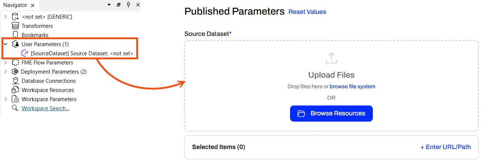
If you provide a default value to the user parameter, FME Flow displays it in the Published Parameters when running the workspace. The end-user running the workspace can keep the default value or supply a different source dataset.
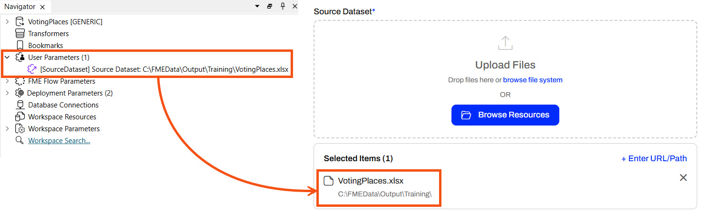
Providing source data files as parameters allows for ultimate flexibility in self-serve workflows. Look through the different options to input source data into your workspace on FME Flow.
You can enter URLs for datasets hosted online (e.g., a public dataset, an open data portal, or an internal server). When you enter the URL and run the workspace, FME Flow downloads the data directly from the online source. This saves you from downloading it from the online source and then uploading it to FME Flow, and is especially useful for large files. An FME Flow Automation may process data from live links to ensure the most up-to-date data is always used for your workflows.
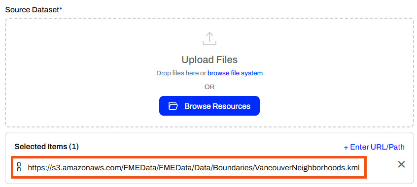
You can enter direct file paths to access datasets on the FME Flow server's local file system. You can enter file paths like C:\Data\zoning.shp or network share paths like \\fileserver\gis\roads.tab. This method is useful for server-side file access without uploading anything through the browser. FME Flow will read the data from the path instead of uploading the dataset through the Browse File System option.
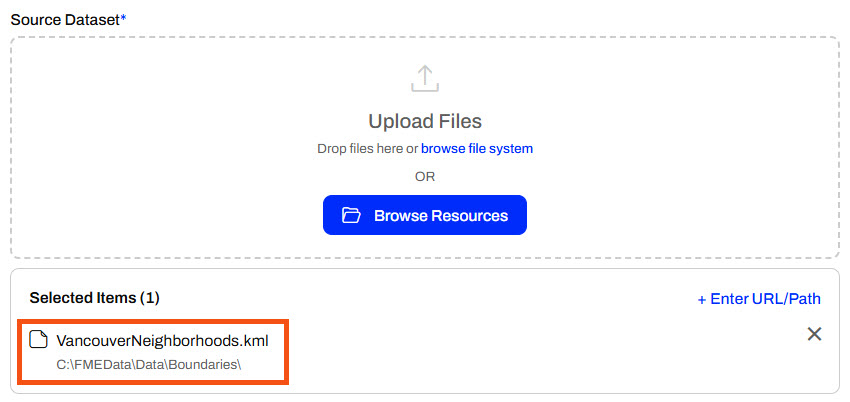
This option only works if FME Flow has permission to access the file path provided. Unless FME Flow is installed on your computer, it doesn't have access to your C: drive and will access the C: drive on the server it is installed on. For shared network drives, the FME Flow service account must have permission to access the file and it's folder location. See Workspace Fails on FME Flow When Using UNC Paths for more information.
You will want to use the Browse Resources option when the source file is already uploaded to FME Flow's Resources, such as in the Data or Temp folders. It's ideal to store data in Resources if the file will be used across multiple jobs or workflows to avoid repeated uploads, ensure consistency, and support shared access.
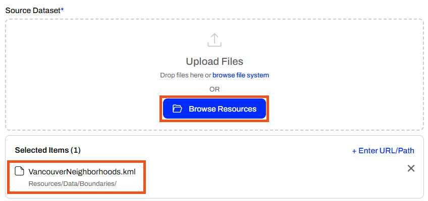
You can also browse your file system to select the file to upload to FME Flow. This option is practical when you prefer to navigate your folders manually instead of drag-and-drop, or if your device does not support drag-and-drop. Uploading a file to FME Flow this way is better than using the Enter File Path option if FME Flow is not hosted on the machine you're using to access FME Flow to ensure access to the file.
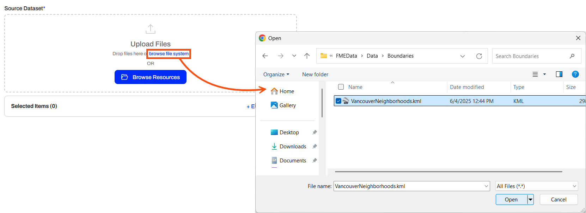
The selected file will appear as Uploaded for FME Flow to use as source data.

The drag-and-drop file method is best if you have a local file ready and want a quick and easy upload. It is also very convenient if you already have the desired file open in the file explorer. Ultimately, this option is best for ad-hoc one-time runs of your workspace where the file is only needed one time.
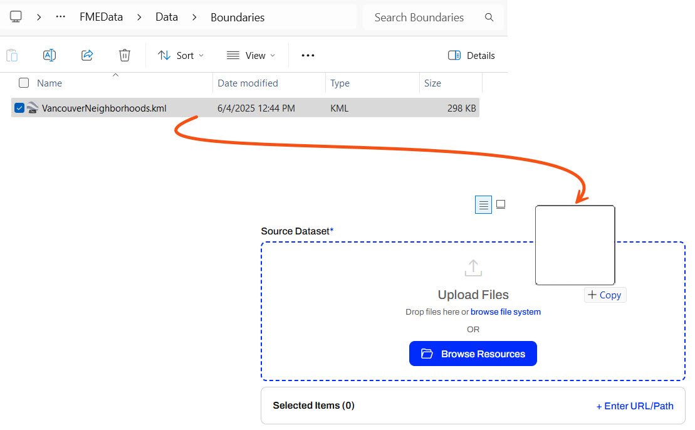
Once you drop the file, it will upload and be ready to use as input to your workspace.

If you add source datasets by uploading at runtime, FME Flow temporarily stores the files. FME Flow keeps a workspace's temporary uploads in Resources > System > temp > upload > Repository > Workspace > User. By default, FME Flow stores the files and removes them after 24 hours using system clean-up tasks. This applies to files you add via the Browse File System and Drop Files.
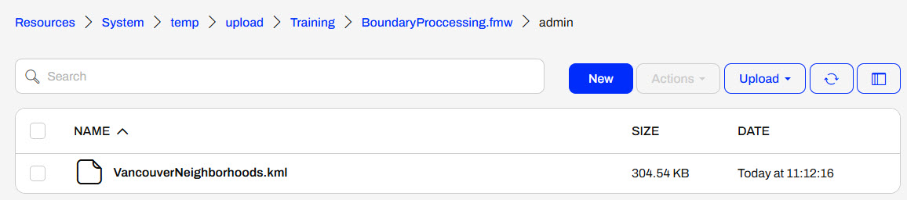
Suppose you rerun the workspace before the clean-up task removes the temporary data. In that case, you can select previously uploaded files for the workspace by clicking the Browse Resources option in the source file parameter and navigating to the Temporary Uploads tab. You may select the file as the source dataset to run the workspace again.
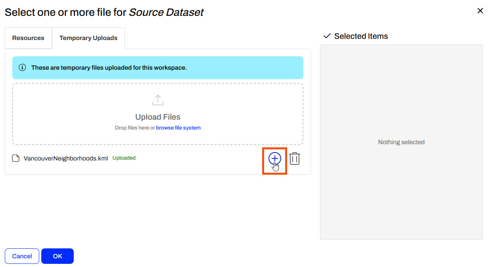
There are some cautions and limitations to consider when end-users upload data for translation:
Sven, a city government planning analyst, is starting to run his workflows on FME Flow. He created a workspace that reads in Neighborhood polygons from KML and reprojects them to UTM83-10 to match VotingPlaces points (read from GML). The Clipper then clips VotingPlaces by the Neighborhoods boundaries and writes out the boundaries and a separate layer of voting places for each neighborhood to a geodatabase. While the neighborhood boundaries data does not change, the voting location data may change frequently, so that the user can upload new temporary data through a Published Parameter.
Follow along with Sven as he continues his workflow by publishing the workspace to FME Flow and then running it on FME Flow with temporary data.
Sven opens his workspace (C:\FMEData\Workspaces\DeployWorkflowsWithFMEFlow\input-source-data-at-runtime.fmw) in FME Workbench. It reads in Voting Places (GML) and Neighborhoods (KML) data, clips the voting places to the neighborhoods, and then writes the data to a geodatabase to keep it updated with the most accurate voting information.
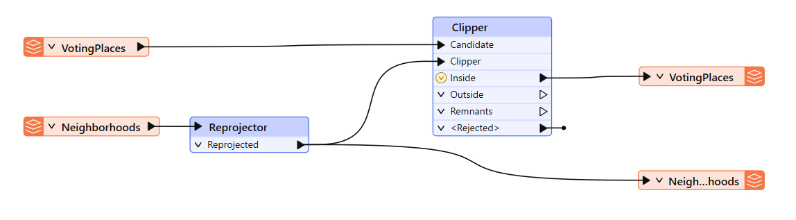
To collect user input for the source data, Sven accepts the data on FME Flow using parameters. Sven expands the User Parameters section in the Navigator window to inspect the parameters, one for each Reader.
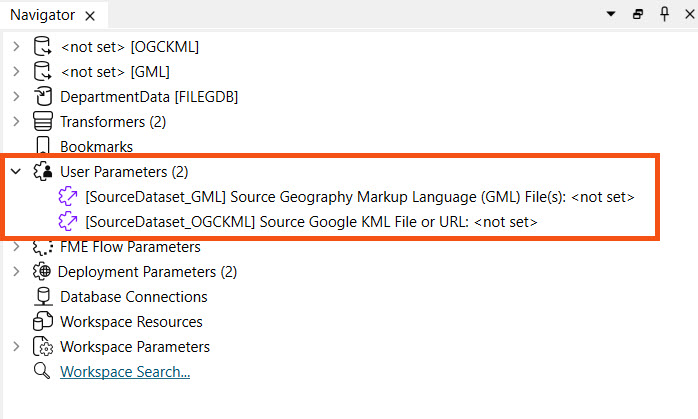
Currently, the default source data values are empty. That is okay because FME Flow will require the workspace user to input values for the source dataset parameters.
Sven publishes the workspace to FME Flow, saves it in the Training repository, and registers it with the Job Submitter service.


Sven navigates to FME Flow and opens the Run Workspace page and configures it to run his recently published workspace.
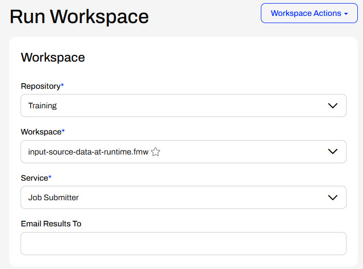
Under Published Parameters, Sven needs to add the KML file first. Sven opens the Windows File Explorer and navigates to VancouverNeighborhoods.kml (C:\FMEData\Data\Boundaries\VancouverNeighborhoods.kml). He drags the KML file onto the Upload Files area of the Source Google KML File or URL parameter and drops it there.
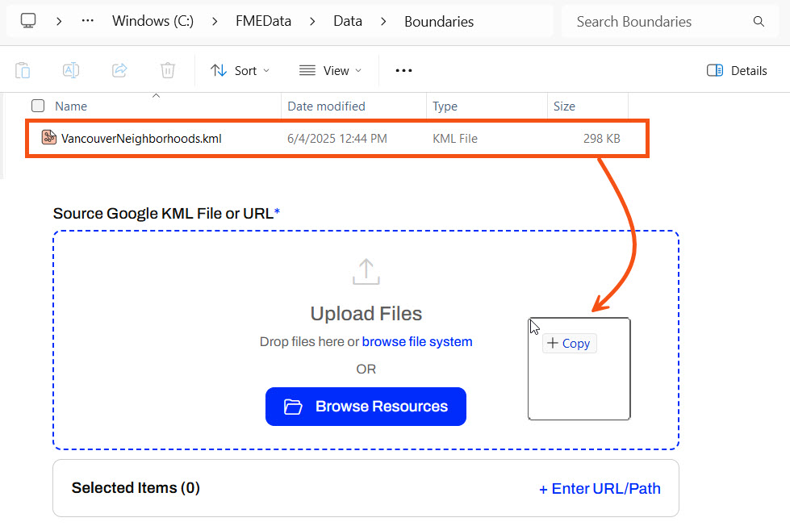
By dropping the file, FME Flow uploads it to temporary uploads and uses the file as input to the workspace.
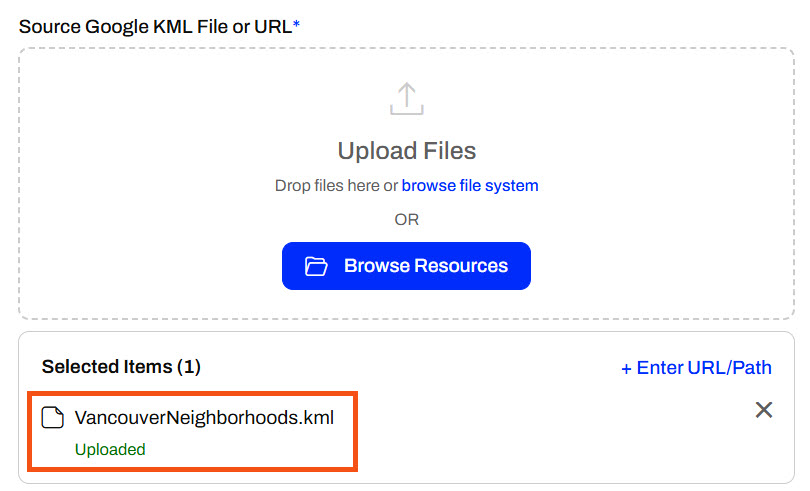
For the Source GML File, Sven knows that GML files need accompanying XSD (XML Schema Definition) files to interpret correctly. This means he needs to input the GML file as the source to the workspace and have the supporting XSD file in the same directory. To upload both files as Temporary Uploads, Sven doesn't drop both files as input; instead, he clicks Browse Resources.
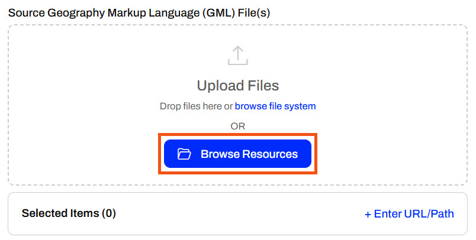
Sven goes to the Temporary Uploads tab. He drags both ElectionVoting.gml and ElectionVoting.xsd (C:\FMEData\Data\Elections) files to the Upload Files area. Because he only needs the ElectionVoting.gml file as the source file, he deselects the XSD file in the Selected Items column. The VancouverNeighborhoods.kml file Sven uploaded in the previous step is also listed in Temporary Uploads since FME Flow stores the uploaded files in the same location. So, FME Flow stores the ElectionVoting.xsd file in the Temporary Uploads location, but does not make it a source file input to the workspace.
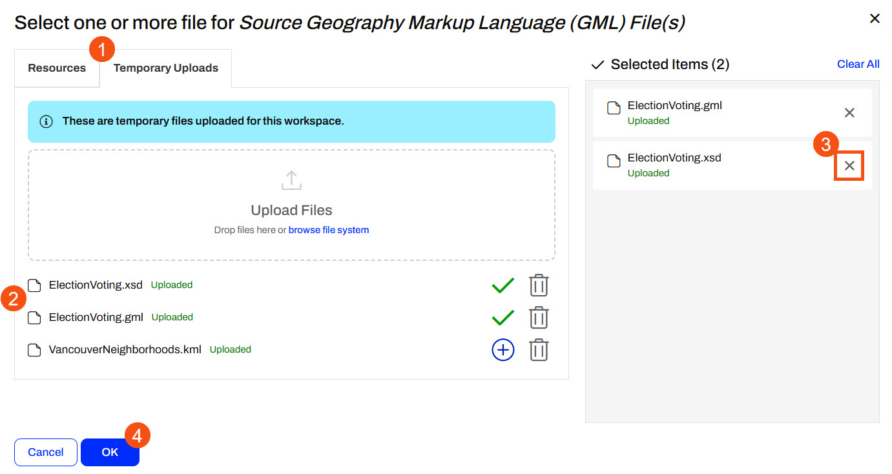
Sven clicks OK and confirms that FME Flow only includes the GML file for the source parameter.
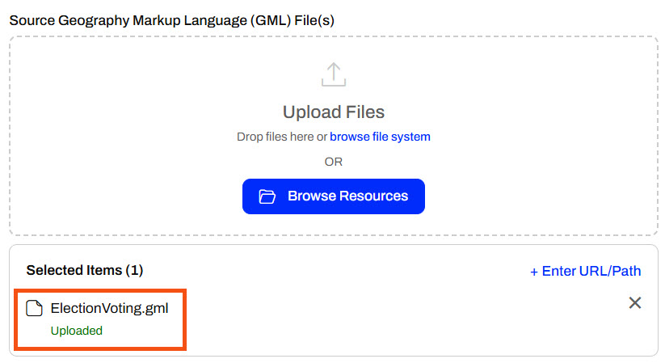
This method is useful for formats that require "sidecar" files, such as Esri Shapefile or MapInfo TAB. If the XSD file wasn't necessary, Sven could've simply uploaded the GML file directly on the Run Workspace page.
If your workspace fails here, make sure that you've uploaded both the ElectionVoting.gml and ElectionVoting.xsd files (C:\FMEData\Data\Elections\) to Temporary Uploads, but only the ElectionVoting.gml file is selected for the parameter input.
Sven clicks Run to submit the workspace to run on an FME Engine. The workspace uses the temporarily uploaded data as input.
In FME 2025.0.1, there is a bug that disables the Run button once the ElectionVoting.gml and ElectionVoting.xsd files have been added to Temporary Uploads. If you encounter this, refresh the browser page and select the KML and GML files from Temporary Uploads in Browse Resources again.
To review his temporarily uploaded files, Sven navigates to Resources > System > temp > upload > Training > input-source-data-at-runtime.fmw > admin.
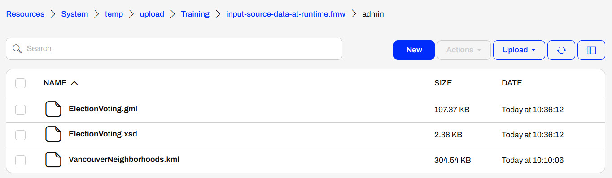
Sven used FME Flow's Temporary Uploads to input source data to a workspace at runtime. However, FME Flow removes these files after 24 hours, so he will continue with other options to store and input source data on FME Flow to minimize the effort by end-users.